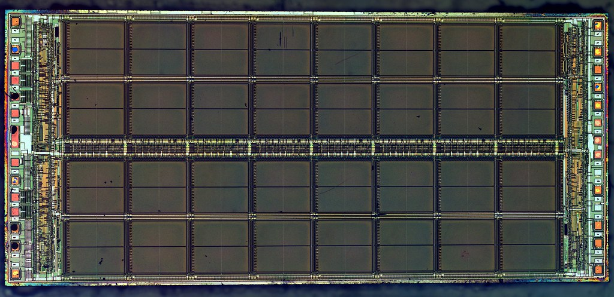

Micron's revenue rose 256% to $133.2 billion as memory prices climbed

Micron's revenue rose 256.3% to $133.2 billion in fiscal 2026, after the average selling prices of its memory chips roughly tripled. Cost of goods sold rose only 14.1%, so operating margin jumped to 74.6% from 26.1%. Net income was $85.0 billion, against $8.5 billion a year earlier. Free cash flow reached $59.0 billion, up from $1.7 billion, even as capital spending nearly doubled.
Prices drove the jump in revenue
Revenue grew 256.3% after 48.9% growth in fiscal 2025. The company said demand for memory and storage, driven in large part by AI, grew faster than its own and the industry's ability to add supply. Sales of DRAM, its largest product line, rose 252% on an approximate 180% increase in average selling prices and bit shipments up in the mid-20% range. Sales of NAND rose 274%, with average selling prices up about 200%.
Revenue more than tripled in each of Micron's four business units. It in the Core Data Center unit rose 420%, in the Automotive and Embedded unit 234%, in the Cloud Memory unit 219% and in the Mobile and Client unit 209%. In Mobile and Client, higher prices were partly offset by lower bit shipments, because Micron redirected supply to its other units.
Revenue has moved with the memory cycle. It fell to $15.5 billion in fiscal 2023, when Micron made an operating loss of $5.7 billion. Fiscal 2026 revenue was 8.6 times that level and 5.7 times the fiscal 2019 figure of $23.4 billion. Fiscal 2026 had 53 weeks; fiscal 2025 had 52.
Margins reached the highest level of the eight years
Gross margin rose 40.9 points to 80.7%. The company said margins improved mainly because of higher average selling prices, with help from a better product mix and lower manufacturing costs. In fiscal 2023, cost of goods sold had exceeded revenue, leaving a gross loss equal to 9.1% of revenue.
Research and development spending rose 48.8% to $5.7 billion, which the company put down mainly to higher pay, including variable pay, and more development wafers. Because revenue grew faster, research and development fell to 4.2% of revenue from 10.2%. Operating income rose to $99.3 billion from $9.8 billion.
The effective tax rate rose to 14.8% from 11.6%. The company said the main reason was the 15% global minimum tax, which Singapore put into effect for Micron in fiscal 2026 and which largely offsets its Singapore tax incentives. Diluted earnings per share rose to $74.33 from $7.59.
Cash flow grew faster than capital spending
Cash from operations rose 5.1 times to $89.7 billion. Spending on property, plant and equipment rose 93.7% to $30.7 billion, but took only 34.2% of operating cash flow, against 90.5% in fiscal 2025. Free cash flow was $59.0 billion, or 44.3% of revenue. In the seven years before, it had ranged from a negative $6.1 billion in fiscal 2023 to $3.4 billion in fiscal 2019.
Micron also received $3.32 billion of government incentives toward its capital spending, which the free cash flow figure here does not count. Operating cash flow rose mainly because of higher net income, the company said, partly offset by a large increase in receivables.
Debt fell and cash grew
Cash and short-term investments rose to $43.4 billion from $10.3 billion. Counting long-term marketable investments as well, the company reported $73.45 billion of cash and marketable investments, up from $11.94 billion. Micron repaid $10.04 billion of debt during the year, and total debt fell 75.8% to $2.8 billion. Counting finance lease liabilities as debt, Micron had $38.3 billion more cash than debt at the end of fiscal 2026, after $4.3 billion more debt than cash a year earlier.
Part of the new cash came from customers. Under multi-year supply agreements signed in fiscal 2026, Micron received $12.75 billion of customer deposits, nearly all due to be repaid between 2029 and 2031. Shareholders' equity rose 155.5% to $138.4 billion, and property, plant and equipment rose 35.9% to $63.3 billion.
Payouts to shareholders stayed small
Micron paid $610 million in dividends, up 16.9%, and spent $650 million buying back shares under its repurchase program, after none in fiscal 2025. Together that was $1.3 billion, or 2.1% of free cash flow. The diluted share count rose 1.6% to 1,143 million.
Eight years of figures
Fiscal 2026 had 53 weeks and fiscal 2025 had 52. Capital spending here is cash spent on property, plant and equipment, before government incentives; Micron's own "investments in capital expenditures, net" deducts them. Cash here counts cash and short-term investments only, not long-term marketable investments.
Sources: Form 10-K (SEC EDGAR) · Form 10-K filing index · EDGAR company facts for Micron Technology · Micron fiscal 2026 fourth-quarter earnings release (Exhibit 99.1). More figures for Micron Technology are on its company page.